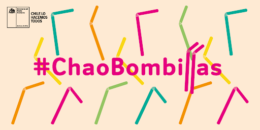

¡Comienza a reciclar!

No utilices productos desechables
Intenta no utilizar productos desechables como por ejemplo bombillas, cubiertos o platos
plasticos, como bien sabras, no se reutilizan y fomentan la producion de productos nuevos.
Si quieres empezar a reciclar despidete de ellos y opta por productos reutilizables.
LLeva tus propias bolsas
Las bolsas de plastico no solo dura muy poco tiempo antes de romperse, sino que ademas
contaminan las aguas de forma excesiva. En su lugar, compra bolsas de tela y llevala
contigo cada vez que vayas al supermercado.
Despidete de las botellas de plastico
Ademas de que las botellas de plastico contaminan el entorno, tambien pueden generar
problemas a tu salud, es por eso que es mejor comenzar a utilizar botellas de vidrio y
acero inoxidable.
Dona juguetes
Cada dia se tiran cientos de juguetes a la basura, a pesar de estar en perfecto
estado. ¿No seria mejor donarlos a hospitales o centros de acogida? Seguro que alli
podran darle una segunda vida.
Deposita cada desecho en su contendor
Tira cada residuo a su contenedor, de lo contrario, no solo no estaras contribuyendo
a cuidar el medio que te rodea, sino que estaras dificultando el proceso de reciclaje